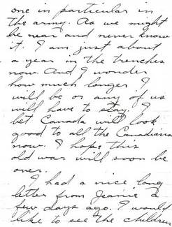
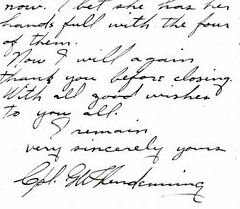
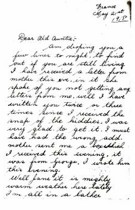
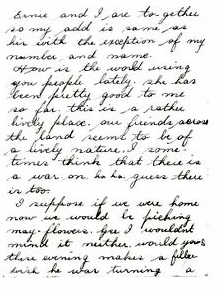
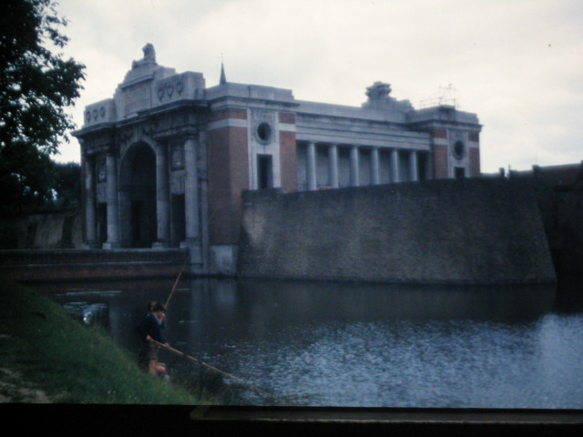
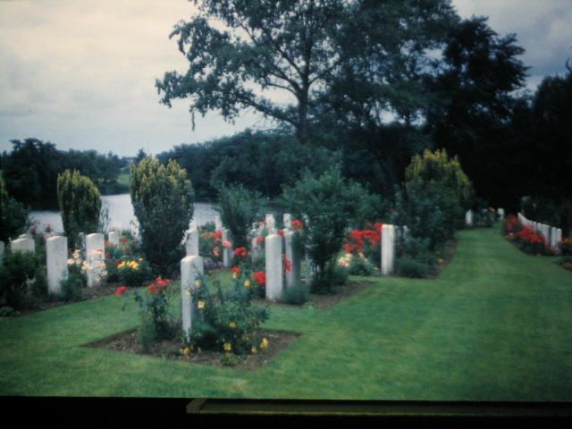

Issue 187 · Apr 14, 2010
Family Chronicle #187 (April 2010) presents WWI letters from Guy W. Glendenning (Don's uncle) and Jimmie Adams to his mother Jane, providing intimate wartime correspondence and family context that shaped Don's childhood.
The Family Chronicle
The
Family
Chronicle
No.
187 April 14, 2010
____________________________________________________________________
WW1
Letters

Letter dated 3-11-17 from Guy
W. Glendenning to Mrs. John MacKenzie (Aunt Tine) thanking her for a
parcel. From the envelope, it seems that Aunt Tine sent the
envelope to her sister, Jane Glendenning, married to Guy’s
brother, Elmer, who was living at Langley Field Virginia, USA. At
the time of writing, Guy had been in the trenches for nearly a year.


The
Family Chronicle (Copyright)
is an occasional newsletter published by Don Glendenning and posted
on the family website. It is intended to share information about my
family, community and the times in which I grew up. While every
effort is made to be accurate, errors are likely to occur.
Comments, enquiries and information may be sent to 62 Queen
Elizabeth Drive, Charlottetown, PEI, C1A 3A9. Tel: 902 892 5859.
Email: don@glendenning.net
Web: www.glendenning.net/don


A
letter from Jimmie (James) Adams to Jane Glendenning. My mother,
Jane, was one of the youngest members of her family; Jimmie was the
son of her oldest sister. Technically, my mother was Jimmie’s
aunt although they were nearly the same age. The “Ernie”
mentioned in the letter would be Ernest Watling, my mother’s
brother and also an Uncle of Jimmie Adams.
From
the Editor
The
WW1 letters were part of a collection of photographs and letters
belonging to my Mother. Jane (Watling) Glendenning
In
an earlier Chronicle I mentioned that I had two Uncles and an Aunt
who served overseas in WW! In addition, there were a number of
cousins. All were held in very high regard in my home.

The Menin Gate memorial contains the names of
54,896
officers and men from all the overseas British and Commonwealth
forces who fell in the Ypres Salient before 16th
August 1917.

WW1 Cemetery somewhere in
Belgium
Download Original